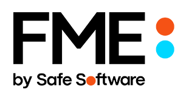
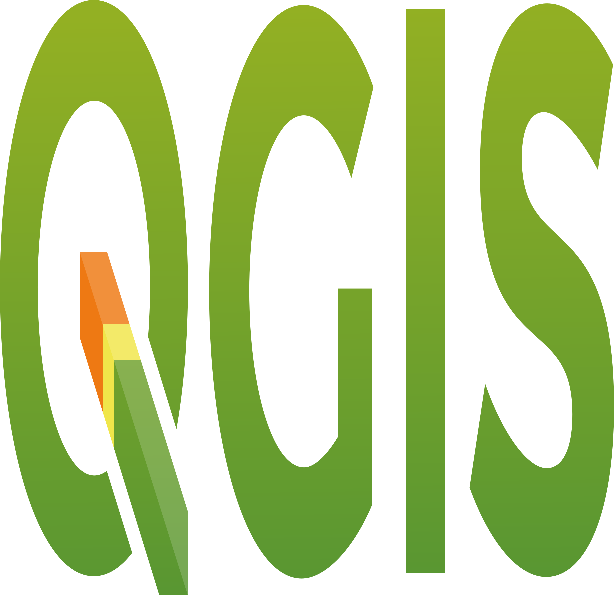
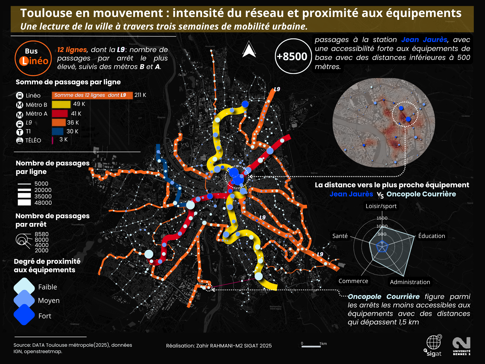
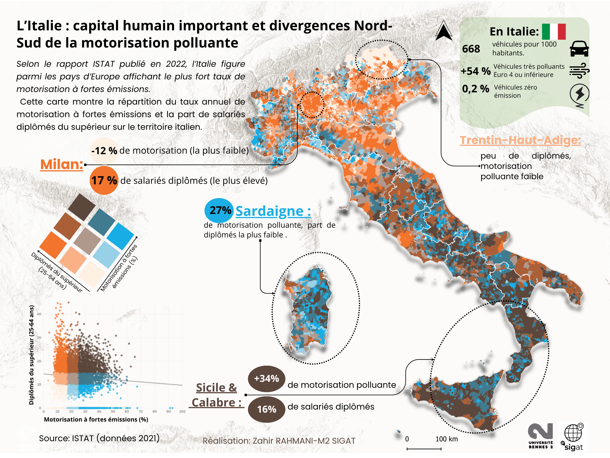
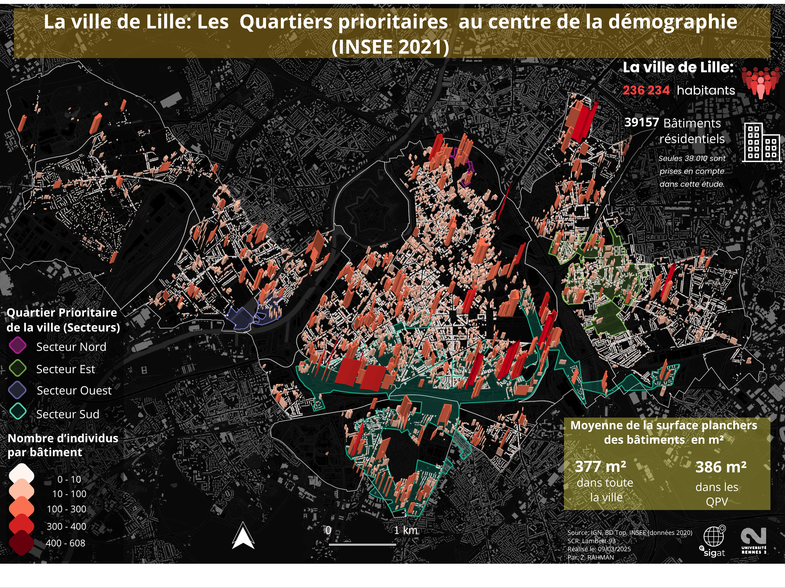
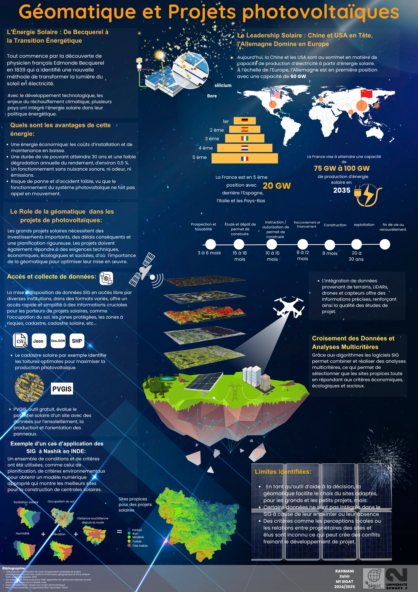
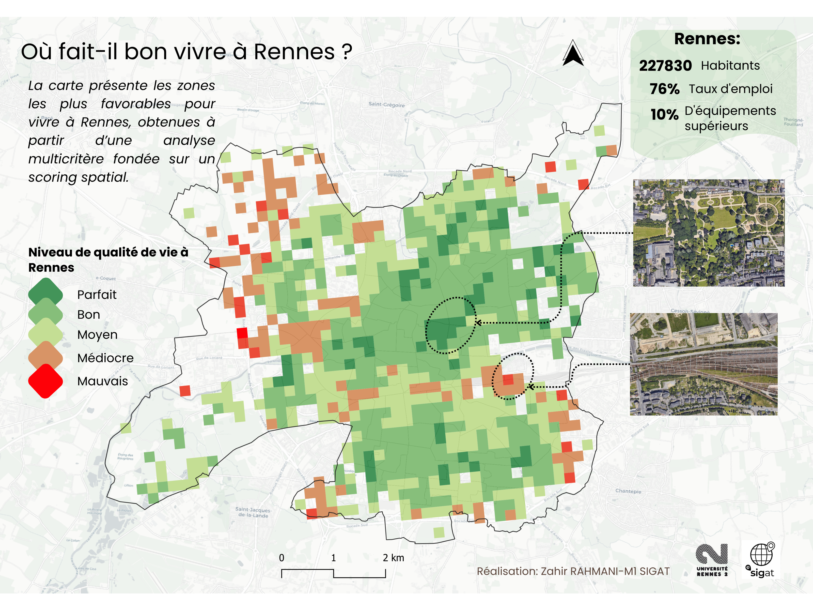
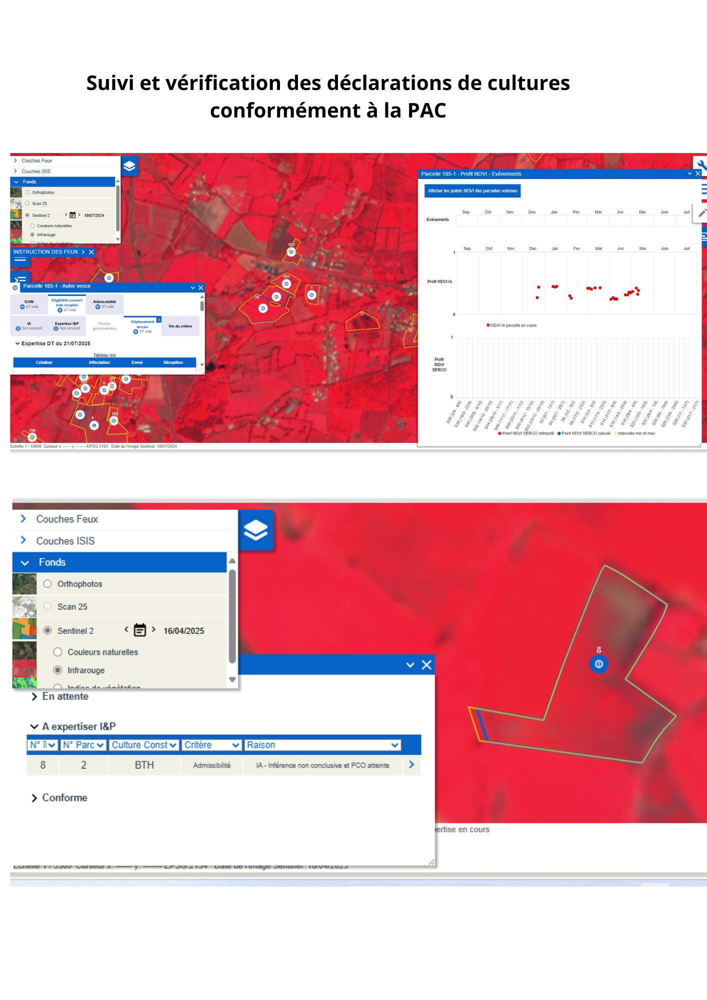

Bonjour, moi c'est Zahir RAHMANI.
Bienvenue sur mon portfolio !

Depuis le 18 mai, je suis stagiaire géomaticien chez Q ENERGY France, où je participe à la gestion, la structuration et la valorisation des données géographiques utilisées dans le développement de projets d’énergies renouvelables. Mes missions portent notamment sur la gestion de bases SIG, le contrôle qualité, l’enrichissement et la fiabilisation des données, l’automatisation de traitements ainsi que l’amélioration des processus de gestion de l’information géographique. J’ai notamment travaillé sur des données liées aux servitudes d’utilité publique (AC1), aux servitudes aéronautiques de dégagement, aux réseaux électriques HTA/HTB ainsi qu’aux données patrimoniales. Je contribue également au développement d’outils permettant de cadrer et standardiser l’intégration des métadonnées ainsi que leur publication web. Cette expérience, actuellement en cours, me permet également de développer progressivement de nouvelles compétences liées à la production cartographique, aux différentes phases d’instruction des projets et aux besoins géomatiques associés au développement des énergies renouvelables.
Auparavant, j’ai travaillé en CDD à l’ASP en tant qu’analyste d’images satellitaires, où j’ai développé mes compétences en télédétection et en analyse spatiale à travers l’interprétation d’images Sentinel-2 et le contrôle des données géographiques liées aux déclarations agricoles de la PAC.
J’ai également réalisé un stage de six mois au sein du service SIG de Nanterre, durant lequel j’ai participé à la fiabilisation de la base des Points d’Eau Incendie (PEI) dans le cadre du RTGE, au contrôle qualité des données, à l’automatisation de traitements avec FME et à la publication des données sur le portail cartographique de la ville. J’ai aussi contribué à un projet de Deep Learning et au PAVE à travers l’analyse des anomalies topologiques du réseau viaire.
À travers ce portfolio, je présente quelques projets illustrant mon parcours en géomatique, de la gestion des données spatiales à leur automatisation et leur valorisation cartographique. Je suis actuellement à la recherche d’un CDI ou d’un CDD en géomatique.
..... Si mon profil vous intéresse, je serais ravi d’en discuter. N’hésitez pas à me contacter.
Je sais travailler seul sur un projet en recherchant, si nécessaire, les solutions aux problèmes rencontrés.
En équipe, comme dans la vie, je sais écouter mon entourage et agir en conséquence.
Je peux m'adapter rapidement à une équipe et aux missions qui me sont confiées.
Dans les situations de stress, je garde mon sang-froid pour trouver des solutions efficaces.











Dans le cadre d’un exercice en master SIGAT, j’ai réalisé une carte représentant la répartition de la population agrégée aux bâtiments de la ville de Lille. En croisant les données de population par IRIS de l’INSEE (nombre d’habitants et taux de chômage) avec le jeu de données des bâtiments issues de la BDTOPO de l’IGN, il est possible de visualiser la distribution des populations et de mieux comprendre leur profil socio-économique. L’analyse révèle des tendances intéressantes : les quartiers situés au sud de Lille présentent une forte concentration d’individus par bâtiment et un taux de chômage plus élevé, tandis qu’au nord, malgré une densité similaire, le chômage reste relativement faible. Limites de la méthode La ventilation répartit les habitants de manière homogène selon la surface de plancher des bâtiments : plus la surface est grande, plus le nombre d’individus attribués est élevé. Cette simplification ne reflète pas toujours la réalité, mais elle offre une première lecture efficace du territoire.
La mission 1 avait pour but d’améliorer la fiabilité et la cohérence des données concernant les Points d’Eau Incendie (PEI) de la ville de Nanterre. Ces données étaient dispersées dans trois bases différentes : celle du RTGE, celle de la BSPP et celle du CDA. Chaque base possédait ses avantages mais aussi ses limites. Par exemple , la base RTGE était très précise au niveau de la localisation, mais elle n’était plus mise à jour et ne contenait pas toutes les informations techniques. De leur côté, les bases de la BSPP et du CDA étaient plus complètes, mais elles présentaient des différences dans certaines données, comme la disponibilité ou la propriété des PEI. des trois sources existantes. J’ai utilisé le logiciel FME pour automatiser ce travail : il m’a permis de me connecter directement aux API des différentes institutions, de rapatrier les informations et de mettre à jour la base de manière continue. FME a aussi facilité le croisement des données et leur homogénéisation, ce qui a permis d’obtenir un ensemble cohérent et plus fiable. Ensuite, j’ai utilisé ArcGIS Pro pour la partie vérification et contrôle visuel. Grâce à la vue immersive proposée par Cyclomedia, j’ai pu observer directement les emplacements réels des PEI sur le terrain sans me déplacer. Cela m’a permis de confirmer la présence ou l’absence de nombreux points et de corriger certaines erreurs de positionnement. Au final, cette mission a permis de construire une base de données complète et harmonisée, combinant la précision spatiale, la richesse d’information et une mise à jour régulière.
Comme précisé dans la slide précédente, les vues immersives de Cyclomedia intégrées dans ArcGIS Pro ont permis de vérifier la majorité des PEI sans nécessiter de déplacements sur le terrain. Pour les PEI situés dans des zones inaccessibles à ces vues immersives, comme les rues étroites, j’ai créé des itinéraires optimisés en divisant le territoire en quatre zones. Chaque itinéraire permettait de suivre le chemin le plus court afin de vérifier l’ensemble des PEI d’une zone en moins de trois heures par jour, soit quatre jours de vérification au total. Sur le terrain, l’application Field Maps a ensuite été utilisée pour effectuer les vérifications en suivant précisément ces itinéraires. Enfin, un tableau de bord interactif a été développé pour centraliser et visualiser les résultats des contrôles qualité, mettant en évidence les PEI présentant des incohérences afin que les gestionnaires de la BSPP et du CDA92 puissent les corriger efficacement.
La deuxième mission avait pour objectif de créer un modèle d’intelligence artificielle capable de détecter automatiquement les passages piétons. Cette mission a été lancée dans le cadre des exigences de la loi LOM, qui impose de définir une distance de sécurité entre les zones de stationnement et les passages piétons. L’idée était donc de pouvoir repérer facilement, grâce à l’IA, les passages piétons présents sur le territoire et de vérifier les zones où le RTGE n’est plus à jour. Le processus s’est déroulé en trois grandes étapes : la préparation des échantillons d’entraînement, l’apprentissage du modèle et enfin la détection des objets. Pour entraîner le modèle, nous avons sélectionné environ 436 exemples de passages piétons répartis sur toute la ville, afin d’avoir un ensemble de données varié et représentatif. Deux méthodes ont été testées : Pascal, qui permet de dessiner un polygone autour de l’objet détecté, et Mask RCNN, qui génère un masque plus précis autour de la zone d’intérêt, mais demande plus de temps de calcul.
Dans le cadre de l’atelier en licence professionnelle en géomatique à l’Université du Mans, j’ai participé activement à la réalisation d’un prototype de plan interactif du campus visant à faciliter l’orientation pour les étudiants, le personnel et les nouveaux arrivants. J’ai proposé et réalisé une méthode d’atlas du campus, dans le but d’aider mes collègues à localiser et recenser précisément tous les équipements, à collecter les informations et à prendre des photos, en divisant le campus en dix zones pour une organisation optimale. J’ai ensuite intégré toutes les données issues du terrain, des sources Open Data et de l’université dans ArcGIS Online, en organisant les couches selon un ordre de superposition spécifique (polygones, polylignes, points) et en utilisant la symbologie proposée par la plateforme. Pour la couleur et l’esthétique des bâtiments, j’ai décidé de m’inspirer de la charte graphique de l’ancien plan de l’université, afin de rendre le plan intuitif pour les utilisateurs habitués et facilement compréhensible pour les nouveaux arrivants.
Cette carte thématique basée sur la méthode des isochrones offre une représentation claire et informative du temps requis par les camions des Services Départementaux d'Incendie et de Secours (SDIS) pour atteindre un incendie au centre du département de la Sarthe. Les isochrones, différenciés par des couleurs distinctes (vert pour 0-10 minutes, jaune pour 10-15 minutes, orange pour 15-20 minutes), permettent une lecture rapide des zones présentant des temps de réponse variés.